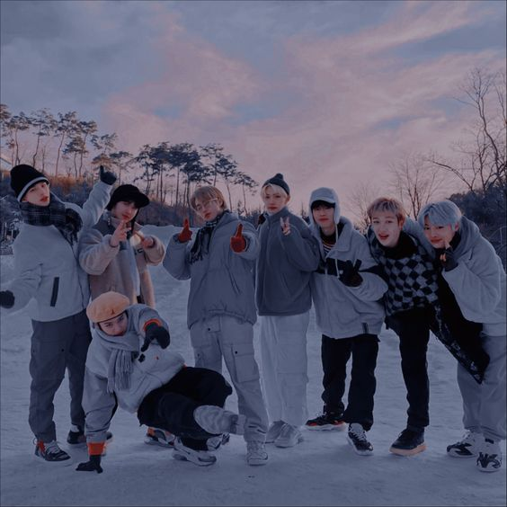

Stray Kids
Stray Kids (Korean: 스트레이 키즈; RR: Seuteurei kijeu; often abbreviated as SKZ) is a South Korean boy band formed by JYP Entertainment through the 2017 reality show of the same name. The group is composed of eight members: Bang Chan, Lee Know, Changbin, Hyunjin, Han, Felix, Seungmin, and I.N. Originally a nine-piece group, member Woojin left due to undisclosed personal reasons in October 2019. Stray Kids released their pre-debut extended play (EP) Mixtape in January 2018 and officially debuted on March 25 with the EP I Am Not.